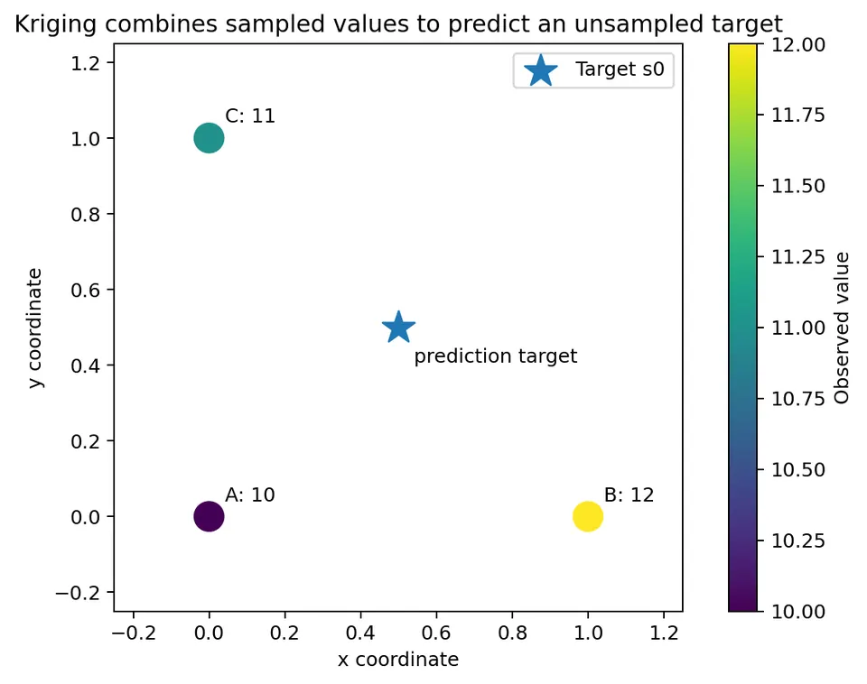
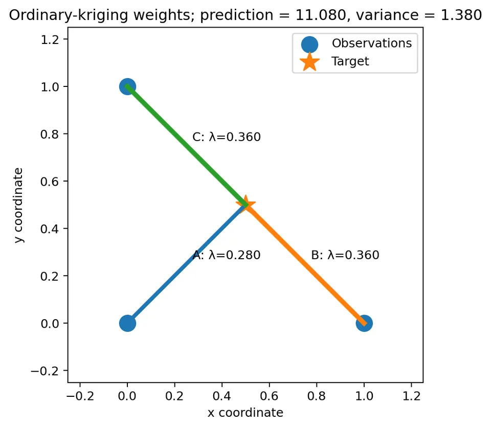
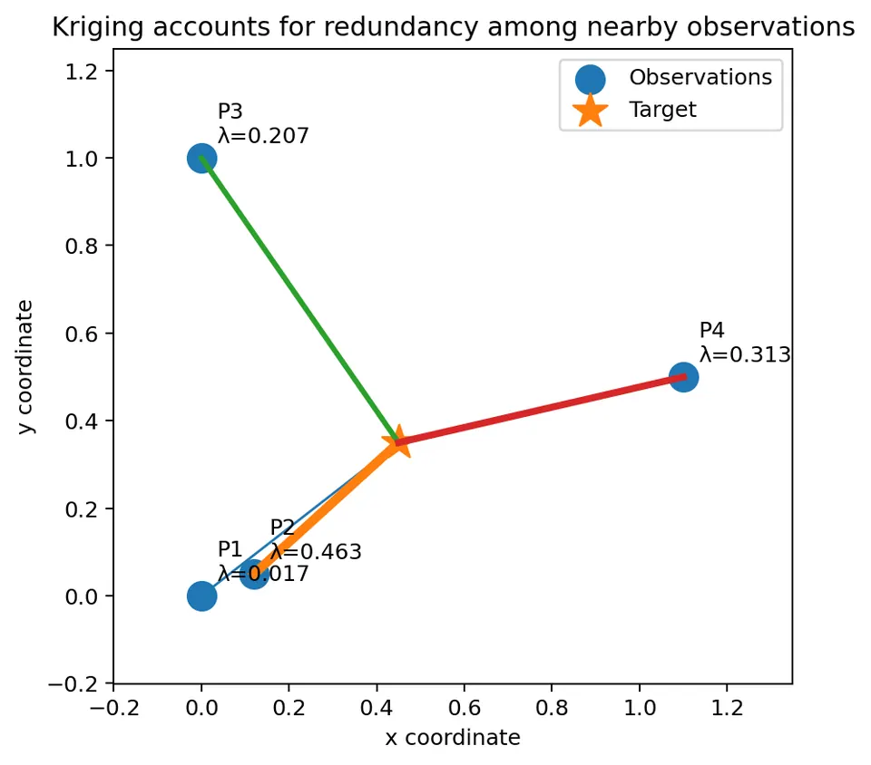
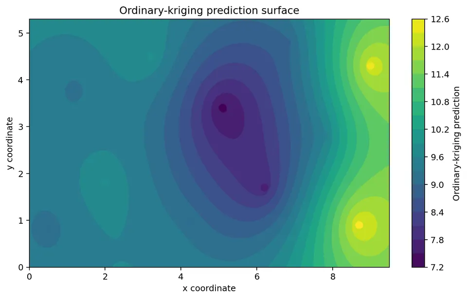
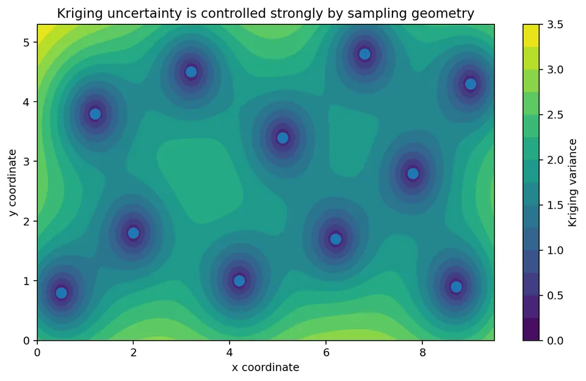
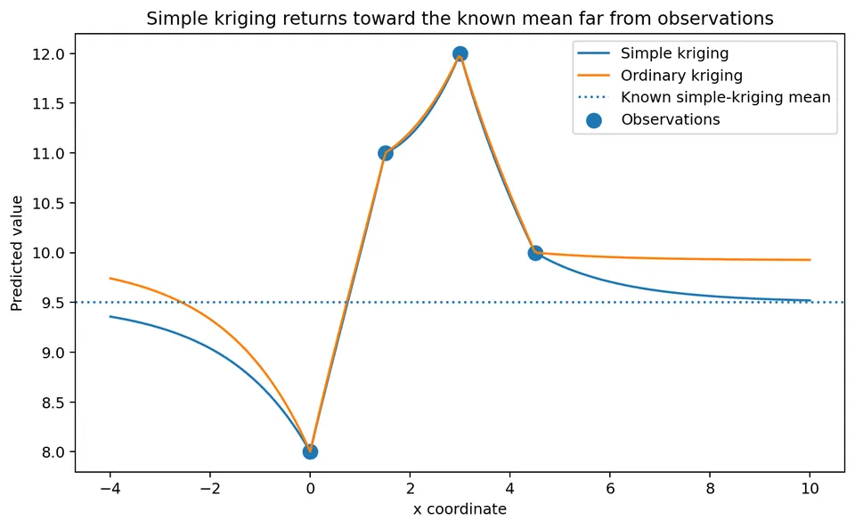
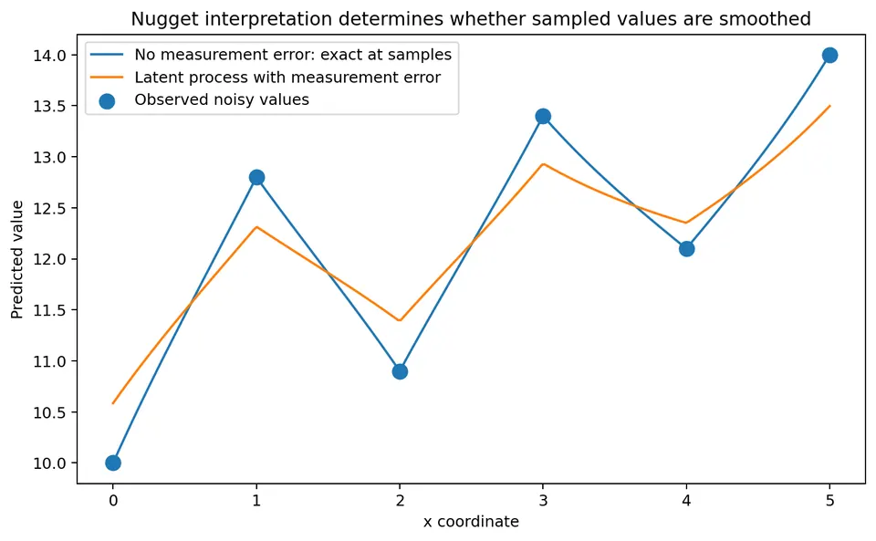
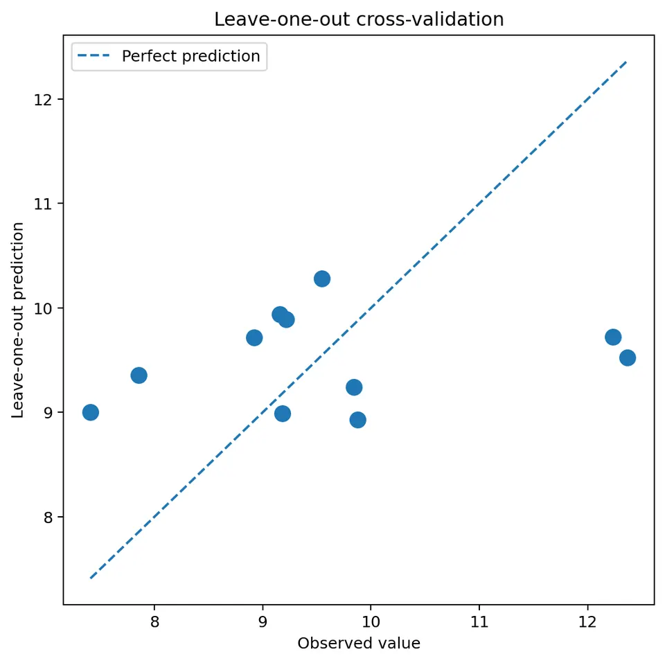

Kriging is a method for predicting a spatial variable at unsampled locations using a model of spatial dependence.
Kriging is often introduced as the best linear unbiased predictor (BLUP). The phrase is useful when each part is interpreted carefully:
Kriging is therefore not simply a generic smoother or a distance-weighted average.
The result depends on:
After this chapter, you should be able to:
Suppose we have observations
$$ Z(s_1),Z(s_2),\ldots,Z(s_n) $$
at sampled spatial locations
$$ s_1,s_2,\ldots,s_n. $$
We want to predict the field at an unsampled location
$$ s_0. $$
Kriging uses a linear predictor
$$ \hat Z(s_0) = \sum_{i=1}^n\lambda_i Z(s_i). $$
The numbers
$$ \lambda_1,\lambda_2,\ldots,\lambda_n $$
are the kriging weights.
Kriging calculates weights that satisfy the mean-model constraints while minimizing the variance of the prediction error.
The prediction error is
$$ Z(s_0)-\hat Z(s_0). $$
Kriging chooses the weights to minimize
$$ \mathrm{Var} \left[ Z(s_0)-\hat Z(s_0) \right] $$
under the assumed spatial model.
The nearest observation may be informative, but it is not necessarily sufficient.
Several observations may jointly contain information about the target.
Kriging also accounts for redundancy among nearby observations. Two points almost on top of each other do not provide twice as much independent information as one point.
This is one reason kriging differs from simple distance-based weighting.

Ordinary kriging assumes that the mean is:
Write
$$ E[Z(s)]=m, $$
where the constant $m$ is unknown.
The ordinary-kriging predictor is
$$ \hat Z(s_0) = \sum_{i=1}^n\lambda_i Z(s_i). $$
For this predictor to be unbiased for any unknown constant mean, the weights must satisfy
$$ \sum_{i=1}^n\lambda_i=1. $$
Take expectations:
$$ E[\hat Z(s_0)] = E\left[ \sum_i\lambda_i Z(s_i) \right]. $$
Because expectation is linear,
$$ E[\hat Z(s_0)] = \sum_i\lambda_i E[Z(s_i)]. $$
Under the ordinary-kriging mean assumption,
$$ E[Z(s_i)]=m. $$
Therefore
$$ E[\hat Z(s_0)] = m\sum_i\lambda_i. $$
For the predictor to have expected value $m$,
$$ m\sum_i\lambda_i=m. $$
Thus
$$ \boxed{ \sum_i\lambda_i=1 }. $$
The sum-to-one constraint is therefore not arbitrary. It preserves an unknown constant mean.
Using a valid semivariogram $\gamma$, the ordinary-kriging system is
$$ \begin{bmatrix} \Gamma & \mathbf{1}\\ \mathbf{1}^{\top} & 0 \end{bmatrix} \begin{bmatrix} \lambda\\ \mu \end{bmatrix} = \begin{bmatrix} \gamma_0\\ 1 \end{bmatrix}, $$
where
$$ \Gamma_{ij} = \gamma(s_i-s_j) $$
and
$$ (\gamma_0)_i = \gamma(s_i-s_0). $$
Here:
With this sign convention,
$$ \sigma_K^2(s_0) = \lambda^\top\gamma_0+\mu. $$
Some texts use the opposite sign for the multiplier. Either convention is valid as long as the kriging system and variance formula are consistent.
Consider three sampled points:
| Point | Coordinate | Observed value |
|---|---|---|
| A | $(0,0)$ | 10 |
| B | $(1,0)$ | 12 |
| C | $(0,1)$ | 11 |
We want to predict at
$$ s_0=(0.5,0.5). $$
Use the exponential semivariogram
$$ \gamma(h) = 0.2 + 2.8\left(1-e^{-h/1.5}\right), \qquad h>0, $$
with
$$ \gamma(0)=0. $$
This example is small enough to work through by hand.
The observation coordinates are
$$ A=(0,0), \qquad B=(1,0), \qquad C=(0,1). $$
Distance A-B:
$$ d_{AB} = \sqrt{(1-0)^2+(0-0)^2} = 1. $$
Distance A-C:
$$ d_{AC} = \sqrt{(0-0)^2+(1-0)^2} = 1. $$
Distance B-C:
$$ d_{BC} = \sqrt{(1-0)^2+(0-1)^2} = \sqrt{2} \approx1.4142. $$
For distance 1,
$$ \gamma(1) = 0.2 + 2.8\left(1-e^{-1/1.5}\right). $$
Because
$$ e^{-1/1.5} = e^{-0.6667} \approx0.5134, $$
we obtain
$$ \gamma(1) \approx 0.2+2.8(1-0.5134). $$
Thus
$$ \gamma(1) \approx 0.2+2.8(0.4866) $$
$$ \gamma(1) \approx 1.5624. $$
For distance $\sqrt{2}$,
$$ \gamma(\sqrt{2}) = 0.2 + 2.8 \left( 1-e^{-\sqrt{2}/1.5} \right). $$
Numerically,
$$ \gamma(\sqrt{2}) \approx1.9093. $$
The observation-to-observation semivariogram matrix is therefore
$$ \Gamma \approx \begin{bmatrix} 0 & 1.5624 & 1.5624\\ 1.5624 & 0 & 1.9093\\ 1.5624 & 1.9093 & 0 \end{bmatrix}. $$
The diagonal is zero because
$$ \gamma(0)=0. $$
The target is
$$ s_0=(0.5,0.5). $$
Distance from A:
$$ d_{A0} = \sqrt{(0.5-0)^2+(0.5-0)^2} $$
$$ = \sqrt{0.25+0.25} = \sqrt{0.5} \approx0.7071. $$
The same distance occurs from B and C:
$$ d_{B0}=d_{C0}\approx0.7071. $$
Now calculate the semivariogram:
$$ \gamma(0.7071) = 0.2 + 2.8\left( 1-e^{-0.7071/1.5} \right). $$
Numerically,
$$ \gamma(0.7071)\approx1.2524. $$
Thus
$$ \gamma_0 \approx \begin{bmatrix} 1.2524\\ 1.2524\\ 1.2524 \end{bmatrix}. $$
The ordinary-kriging system becomes
$$ \begin{bmatrix} 0 & 1.5624 & 1.5624 & 1\\ 1.5624 & 0 & 1.9093 & 1\\ 1.5624 & 1.9093 & 0 & 1\\ 1 & 1 & 1 & 0 \end{bmatrix} \begin{bmatrix} \lambda_A\\ \lambda_B\\ \lambda_C\\ \mu \end{bmatrix} = \begin{bmatrix} 1.2524\\ 1.2524\\ 1.2524\\ 1 \end{bmatrix}. $$
Solving this linear system gives approximately
$$ \lambda_A=0.2801, $$
$$ \lambda_B=0.3600, $$
$$ \lambda_C=0.3600, $$
and
$$ \mu=0.1276. $$
Check the constraint:
$$ 0.2801+0.3600+0.3600 \approx1. $$
So the ordinary-kriging unbiasedness constraint is satisfied.
The observations are
$$ z= \begin{bmatrix} 10\\ 12\\ 11 \end{bmatrix}. $$
The prediction is
$$ \hat Z(s_0) = \lambda^\top z. $$
Substitute the numbers:
$$ \hat Z(s_0) = 0.2801(10) + 0.3600(12) + 0.3600(11). $$
Calculate each contribution:
$$ 0.2801(10)=2.801, $$
$$ 0.3600(12)=4.320, $$
$$ 0.3600(11)=3.960. $$
Add them:
$$ \hat Z(s_0) \approx 2.801+4.320+3.960. $$
Therefore
$$ \boxed{ \hat Z(s_0)\approx11.080 }. $$
Under the assumed constant-mean model and exponential semivariogram, the kriging prediction at $(0.5,0.5)$ is approximately 11.08.
This prediction is conditional on the assumed model.
A different variogram, trend model, or nugget interpretation could produce different weights and a different prediction.

With the sign convention used above,
$$ \sigma_K^2(s_0) = \lambda^\top\gamma_0+\mu. $$
We have
$$ \lambda = \begin{bmatrix} 0.2801\\ 0.3600\\ 0.3600 \end{bmatrix} $$
and
$$ \gamma_0 = \begin{bmatrix} 1.2524\\ 1.2524\\ 1.2524 \end{bmatrix}. $$
Therefore
$$ \lambda^\top\gamma_0 = 0.2801(1.2524) + 0.3600(1.2524) + 0.3600(1.2524). $$
Because the weights sum to 1,
$$ \lambda^\top\gamma_0 \approx1.2524. $$
Then
$$ \sigma_K^2(s_0) = 1.2524+0.1276 $$
$$ \boxed{ \sigma_K^2(s_0)\approx1.3800 }. $$
The kriging standard deviation is
$$ \sigma_K(s_0) = \sqrt{1.3800} \approx1.175. $$
The kriging variance measures prediction uncertainty implied by the sampling geometry and the assumed stochastic model.
It reflects:
Once the covariance parameters are treated as fixed, the kriging variance does not directly depend on whether the observed values are 10, 20, or 100.
This often surprises students.
Suppose a target is near three observations.
Two observations are nearly on top of one another, while a third observation is at a similar target distance but lies in another direction.
A distance-only method may give all three observations similar importance.
Kriging recognizes that the two nearly coincident observations contain highly redundant information.
The weights depend on the full covariance geometry, not only on distance to the target.

The closest observation does not always receive the largest weight.
Kriging weights depend on:
This is why kriging needs the full matrix $\Gamma$, or equivalently the full covariance matrix $C$.
In practice, predictions are usually made at many grid locations.
For every grid location $s_0$:
Repeating this process creates a prediction surface.

The resulting surface is not merely a visual smoothing of the data. It comes from repeatedly solving the model-based prediction problem.
Prediction uncertainty changes with sampling geometry.
Uncertainty is often smaller near sampled locations.
Uncertainty is usually lower inside a dense cluster of observations than in a large unsampled gap.
Outside the convex region covered by data, uncertainty often increases.

A smooth prediction surface does not imply low uncertainty everywhere.
The prediction map and the uncertainty map answer different questions:
Both maps should be examined together.
Simple kriging assumes the mean is known.
Suppose
$$ E[Z(s)]=m $$
and $m$ is known exactly.
The simple-kriging predictor is
$$ \hat Z(s_0) = m + c_0^\top C^{-1}(z-m\mathbf{1}), $$
where
The simple-kriging weights are
$$ \lambda=C^{-1}c_0. $$
They do not have to sum to 1.
Because the known mean is included explicitly:
$$ m + c_0^\top C^{-1}(z-m\mathbf{1}). $$
The model only needs to predict deviations from the known mean.
Suppose the known mean is
$$ m=10. $$
Consider two observations
$$ z= \begin{bmatrix} 12\\ 9 \end{bmatrix}. $$
Their deviations from the mean are
$$ z-m\mathbf{1} = \begin{bmatrix} 2\\ -1 \end{bmatrix}. $$
Suppose the covariance matrix is
$$ C= \begin{bmatrix} 4 & 1.5\\ 1.5 & 4 \end{bmatrix} $$
and covariance with the target is
$$ c_0= \begin{bmatrix} 2.5\\ 1.0 \end{bmatrix}. $$
The weights solve
$$ C\lambda=c_0. $$
The inverse is approximately
$$ C^{-1} \approx \begin{bmatrix} 0.291 & -0.109\\ -0.109 & 0.291 \end{bmatrix}. $$
Thus
$$ \lambda = C^{-1}c_0 \approx \begin{bmatrix} 0.618\\ 0.018 \end{bmatrix}. $$
The simple-kriging prediction is
$$ \hat Z(s_0) = 10 + 0.618(2) + 0.018(-1). $$
Therefore
$$ \hat Z(s_0) \approx 10+1.236-0.018 $$
$$ \boxed{ \hat Z(s_0)\approx11.218 }. $$
Notice that the weights sum to about
$$ 0.618+0.018=0.636, $$
not 1.
That is valid because the known mean accounts for the remaining contribution.
As the target moves far away from every observation,
$$ c_0\rightarrow0. $$
Then
$$ c_0^\top C^{-1}(z-m\mathbf{1}) \rightarrow0. $$
Therefore
$$ \hat Z(s_0)\rightarrow m. $$
Simple kriging therefore returns toward the known mean as the target moves far from the observations.
This is an important conceptual difference between simple and ordinary kriging.

For a latent process with target variance
$$ C(0), $$
the simple-kriging prediction variance is
$$ \sigma_K^2(s_0) = C(0)-c_0^\top C^{-1}c_0. $$
The baseline variance at the target is $C(0)$.
The observations reduce that uncertainty by the amount
$$ c_0^\top C^{-1}c_0. $$
If the target is strongly correlated with informative observations, this reduction is large.
If the target is far from all observations, $c_0$ is close to zero and the prediction variance approaches $C(0)$.
Ordinary kriging assumes a constant but unknown mean.
That assumption may be inappropriate when the mean changes systematically over space.
Universal kriging models the mean as
$$ m(s)=f(s)^\top\beta. $$
For example,
$$ m(x,y) = \beta_0+\beta_1x+\beta_2y. $$
The vector of basis functions is
$$ f(s) = \begin{bmatrix} 1\\ x\\ y \end{bmatrix}. $$
Universal kriging incorporates this trend structure into the prediction.
Let $F$ be the design matrix of trend basis values at the sampled locations.
For a linear coordinate trend,
$$ F = \begin{bmatrix} 1 & x_1 & y_1\\ 1 & x_2 & y_2\\ \vdots & \vdots & \vdots\\ 1 & x_n & y_n \end{bmatrix}. $$
At the target,
$$ f_0 = \begin{bmatrix} 1\\ x_0\\ y_0 \end{bmatrix}. $$
The kriging weights must satisfy
$$ F^\top\lambda=f_0. $$
The covariance-form system is
$$ \begin{bmatrix} C & F\\ F^\top & 0 \end{bmatrix} \begin{bmatrix} \lambda\\ \nu \end{bmatrix} = \begin{bmatrix} c_0\\ f_0 \end{bmatrix}. $$
Ordinary kriging only needs to preserve a constant mean.
Universal kriging may need to preserve:
These additional constraints ensure that the predictor preserves the modeled trend.
Suppose the mean is
$$ m(x,y) = 5+0.8x-0.3y. $$
At target
$$ s_0=(4,2), $$
the mean component is
$$ m(4,2) = 5+0.8(4)-0.3(2). $$
Therefore
$$ m(4,2) = 5+3.2-0.6 = 7.6. $$
Universal kriging does not simply return the trend value 7.6.
Instead, it combines:
Conceptually,
$$ \text{prediction} = \text{trend contribution} + \text{kriged residual contribution}. $$
This decomposition is closely related to regression kriging.
Suppose the true field increases strongly from west to east.
If ordinary kriging is applied over a large region, the covariance model may be forced to absorb part of the trend.
This can produce:
Universal kriging instead assigns the broad trend to the mean model and uses the covariance model for residual spatial dependence.
A useful modeling principle is:
Explain broad deterministic structure with the mean model when possible, and use the covariance model for the remaining spatial dependence.
Students often hear:
"Kriging is an exact interpolator."
That statement needs qualification because exact interpolation depends on the target and on how the nugget is interpreted.
Whether prediction at a sampled location exactly reproduces the observed value depends on:
Suppose the nugget represents real process variation occurring at scales smaller than the sampling spacing.
If the target is the process value at an already observed location, an exact-interpolation convention may be reasonable.
The observed process value is treated as known at that location.
Suppose instead
$$ Y(s)=X(s)+\epsilon(s), $$
where:
If the target is $X(s)$, the error-free latent field, then even at a sampled coordinate we do not know the target exactly because the observation contains noise.
A smoother prediction can therefore be appropriate.
Suppose an instrument reports
$$ Y(s)=12.0 $$
but the measurement-error standard deviation is known to be substantial.
The prediction of the latent $X(s)$ can combine:
The resulting prediction therefore need not equal exactly 12.0.

The key question is not simply:
"Does kriging interpolate?"
A more useful question is:
"What random quantity are we predicting, and how is the nugget interpreted?"
The kriging variance is calculated conditional on the assumed model.
This distinction is important.
A small kriging variance does not guarantee an accurate prediction if the model is wrong.
Possible model failures include:
It is therefore useful to separate two uncertainty questions:
If the fitted model were correct, how uncertain is the prediction because of spatial sampling geometry and process variability?
How uncertain are we because the fitted model itself may be wrong or poorly estimated?
The standard kriging variance primarily addresses the first of these questions.
After covariance parameters are fixed, ordinary-kriging weights are obtained from:
The values
$$ z_1,\ldots,z_n $$
do not appear in the weight system.
The values are used only after the weights are found:
$$ \hat Z(s_0)=\lambda^\top z. $$
Therefore two datasets measured at the same coordinates with the same covariance model would have:
This distinction helps clarify what kriging variance represents.
Kriging weights are not required to lie between 0 and 1.
They can sometimes be negative.
Negative weights can occur because the predictor must balance:
A negative weight is not automatically a sign of error.
However, very large positive and negative weights can indicate difficult sampling geometry or model instability and should be investigated.
A fitted kriging model should be validated.
A common diagnostic is leave-one-out cross-validation.
For each observation $i$:
The error is
$$ e_i = Z(s_i)-\hat Z_{-i}(s_i). $$
The standardized error is
$$ e_i^* = \frac{ e_i }{ \hat\sigma_{K,-i}(s_i) }. $$
Here
$$ \hat\sigma_{K,-i}(s_i) $$
is the kriging standard deviation from the leave-one-out prediction.
Useful validation summaries include the following.
$$ \mathrm{ME} = \frac{1}{n}\sum_i e_i. $$
A value near zero suggests little average bias.
$$ \mathrm{RMSE} = \sqrt{ \frac{1}{n} \sum_i e_i^2 }. $$
Smaller values indicate better predictive accuracy on the response scale.
$$ \mathrm{MSE}_{\text{std}} = \frac{1}{n}\sum_i e_i^*. $$
This should be near zero when the standardized errors are centered.
If the uncertainty model is well calibrated, standardized errors should have a spread near 1.
A spread much larger than 1 suggests that the model may be too confident.
A spread much smaller than 1 suggests that the reported uncertainty may be too large.

Leave-one-out prediction usually removes only one observation while leaving its neighbors in place.
This is useful when the intended task is:
predict missing values inside a well-sampled region.
It can be misleading, however, when the intended task is:
predict in a geographically distant unsampled region.
A left-out point may still have nearby observations only a few meters away, while a true deployment location may be kilometers from the nearest sample.
For geographic transfer or extrapolation, spatially blocked or geographically structured validation is usually more appropriate.
A practical workflow is:
Look for:
Decide whether the mean is:
This determines whether simple, ordinary, or universal kriging is appropriate.
Calculate and inspect:
Estimate:
For every prediction target:
Calculate
$$ \hat Z(s_0) $$
and
$$ \sigma_K^2(s_0). $$
Use a validation strategy that matches the intended prediction task.
Interpret the prediction and uncertainty maps together.
Kriging is a model-based linear prediction method.
Weights depend on the full covariance geometry.
Without the constraint, the predictor does not preserve an unknown constant mean.
If the kriging system changes the sign of the multiplier, the variance formula must change consistently.
The covariance model can then absorb variation that belongs in the mean structure.
Kriging variance is conditional on the fitted model.
A nugget may represent measurement error, microscale process variation, or both.
It usually does not.
For $n$ observations, dense kriging uses an $n\times n$ covariance or semivariogram matrix.
A dense matrix factorization has computational cost on the order of
$$ O(n^3) $$
and storing the matrix requires approximately
$$ O(n^2) $$
memory.
For a few hundred to a few thousand observations, this may be manageable.
For very large spatial datasets, dense kriging can become expensive.
Common large-data strategies include:
A simple scaling strategy is to use only the nearest $k$ observations for each target.
Instead of solving one system involving all $n$ observations, solve a much smaller local system.
This can be computationally efficient, but the neighborhood size $k$ should be chosen carefully.
Too small a neighborhood can:
Local kriging is most effective when the covariance range is short relative to the full study region.
The variogram chapter answered:
How does spatial similarity change with distance and direction?
Kriging answers:
Given that dependence model, how should observed values be combined to predict an unsampled location?
The logical chain is:
$$ \text{sampled spatial data} $$
$$ \downarrow $$
$$ \text{mean/trend model} $$
$$ \downarrow $$
$$ \text{residual covariance or variogram} $$
$$ \downarrow $$
$$ \text{kriging system} $$
$$ \downarrow $$
$$ \text{weights} $$
$$ \downarrow $$
$$ \text{prediction + uncertainty}. $$